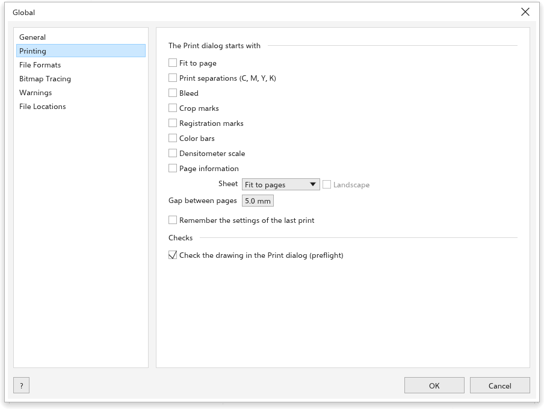

Options globales
Outils > Options > Global contient les réglages qui s'appliquent à tout le programme : la langue, les valeurs par défaut d'impression et d'exportation, la vectorisation, les messages et l'emplacement des fichiers.
Général

- Langue : la langue de l'interface. Cette Aide s'ouvre dans la même langue.
- Rechercher les mises à jour au démarrage (actif) : voir Rechercher des mises à jour.
- Agents IA : Autoriser les agents IA de cet ordinateur à modifier le dessin ouvert (MCP) permet aux assistants d'IA de cet ordinateur de modifier le dessin ouvert ; voir Scripts.
- Rétablir tous les réglages : voir Réinitialiser les paramètres.
Impression

La boîte Imprimer commence avec : Ajuster à la page, Imprimer les séparations (C, M, J, N), Fond perdu, Repères de coupe, Repères de montage, Barres de couleurs, Échelle densitométrique, Informations de page (tous inactifs), la Feuille, Paysage et la Espace entre les pages (5 mm). Mémoriser les réglages de la dernière impression conserve les choix de la dernière impression. Sous Vérifications, Vérifier le dessin dans la boîte Imprimer (contrôle en amont) (actif). Voir Imprimer un dessin.
Formats de fichier

- Fichier > Exporter commence avec : le Format (SVG), la Résolution des formats bitmap (300 ppp), la Qualité du JPEG et du WebP (90), Arrière-plan transparent (actif), la Compatibilité, la Condition de sortie et le Fond perdu. Mémoriser les réglages de la dernière exportation conserve les choix de la dernière exportation.
- Importer : Les objets importés vont Là où le fichier les place (au départ) ou Centrés dans la vue.
- Enregistrement des fichiers .cdr : la Version dans laquelle les nouveaux dessins sont enregistrés en
.cdr.
Vectorisation

La vectorisation rapide utilise l'un des préréglages (Clipart au départ). Chaque vectorisation commence avec Supprimer l'arrière-plan (actif) et Supprimer l'image d'origine (inactif). Voir Vectoriser des images bitmap.
Avertissements

Afficher un message Lorsque des objets d'un fichier ouvert n'ont pas pu être lus, Lorsqu'un dessin ouvert utilise des polices non installées et Avant de retirer un élément de l'étagère (tous actifs). Chaque message a aussi une case qui le désactive ; cochez l'option ici pour le revoir.
Emplacements des fichiers

Indique où sont conservées les préférences et les sauvegardes automatiques. Les préférences se trouvent dans un dossier tracedraw-settings à côté du programme quand il existe (une copie portable), sinon à l'emplacement prévu par votre système pour les paramètres des programmes ; la version pour navigateur les conserve dans le navigateur.